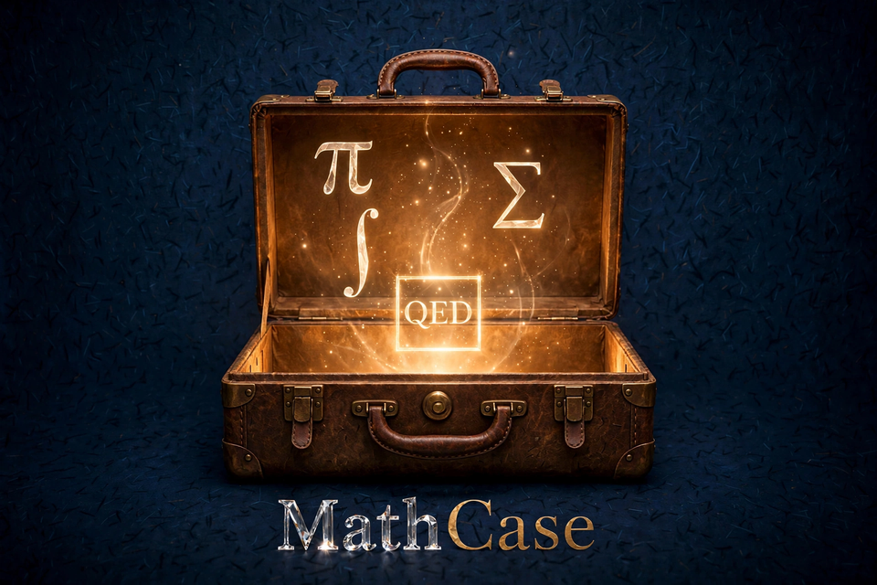
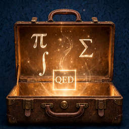

MathCase / Case desk
Local receipts · proof checks remain isolatedLean imports · checkingChecking saved-review support
“My brain is open.”— Paul Erdős Source

A place to open a question.
Follow an idea. Inspect a proof. Carry the useful work forward.
Start with the counterexample Explore the checked theorem Resume your last caseChoose a case to open
Browse saved mathematical cases and proof-pair records. Each card tells you what kind of record it is and what its saved evidence supports.
Reading the local case records…
Waiting for saved records…Waiting for the first evidence read.
Start here
A three-part proof story
Counterexample first, then the checked prime lemma, then its reuse in the square-root-of-two case.
Loading featured cases…
Records are read from existing case receipts and the reconciled pair registry. Search does not change rights, evaluation splits, or gate status.
Explore other saved records
Loading source-backed records…
New problem
Ask a question in your own words. MathCase will help shape what can be researched or checked.
How formal checking and requests work
Lean is optional and checks precise mathematical claims; it cannot establish empirical facts. Saving a draft makes no proof, research, or provider request. Any later formal check or provider use has its own review and authorization.
Start with a problem of your own
Write the question as you understand it. Add a formal statement only if you already have one.
Checking local draft support…
Loading saved local drafts…
Explore worked examples and the bounded queue
Two congruences give one exact solution family
Question: Find every integer x with x ≡ 1 (mod 6) and x ≡ 4 (mod 9).
Answer: x = 13 + 18k for every integer k. Here 13 satisfies both remainders and 18 is the least common multiple of 6 and 9.
- Use the first condition to write
x = 1 + 6afor some integera. - Substitute into the second:
1 + 6a ≡ 4 (mod 9), so6a ≡ 3 (mod 9). Divide by the common factor 3 to get2a ≡ 1 (mod 3), hencea ≡ 2 (mod 3). - Write
a = 2 + 3k. Thenx = 1 + 6(2 + 3k) = 13 + 18k. - Conversely, 13 has remainders 1 and 4, and adding 18 changes neither remainder because 18 is divisible by 6 and 9. Thus this family gives every solution and no others.
The exact two-way statement has a pinned isolated Lean 4.33.1 check; its measured expression has 6,114 core nodes and depth 51. Five explanations are available as drafts; independent review is pending, and no typed M4 receipt or gate promotion is recorded.
Open the checked proof, five drafts, review panel, and reopened dossier
Three shared-factor congruences have one exact solution family
Question: Find every integer x with x ≡ 2 (mod 6), x ≡ 5 (mod 9), and x ≡ 11 (mod 15).
Answer: x = 86 + 90k for every integer k. Each pair of moduli shares gcd 3, and each pair of residues agrees modulo 3.
- Combine the first two conditions: the compatible class is
x ≡ 14 (mod 18), sincelcm(6,9)=18. - Combine that class with
x ≡ 11 (mod 15): the compatible class isx ≡ 86 (mod 90), sincelcm(18,15)=90. - The representative 86 satisfies all three remainders. Adding 90 preserves them because 6, 9, and 15 all divide 90.
Lean 4.33.1 checked four declarations: the representative, both merges, and the complete two-way solution-family theorem. The output reports propext and Quot.sound; sorryAx was not observed. A separate finite check found exactly one solution, 86, among the 90 residues in a full period.
This is established CRT arithmetic with a manually authored proof, not solver discovery or a novelty claim. Independent review is pending; a typed M4 receipt and M6 proof-shape measurement have not been created.
Open the interactive three-condition solver · Open the checked proof, five drafts, local review form, and exact case record
A divisibility contradiction behind √2's irrationality
Campaign proof: sqrt2_no_coprime_positive_numerator_denominator_chunked proves that no positive coprime natural numbers p,q satisfy p² = 2q². Since 2 is prime and divides p², it divides p, so write p = 2k. Substitution and cancellation give q² = 2k², so 2 divides q. Then 2 divides both coprime numbers, a contradiction. Lean 4.33.1 checked five declarations together; the observed axiom report has no sorryAx. Pantograph did not find it: the bounded search exhausted after 27 tactic attempts. This is a known result and a manual proof decomposition, not a novelty claim or standard M4 receipt; statement review remains pending.
Open the five checked Lean proof steps
Reopening the exact checked proof steps…
Open chunked Lean source · Open checked Lean result · Open bounded search record · Open five explanation drafts
Exact evidence paths and SHA-256 digests
Lean source: data/local/staging/problem-queue/experimental-campaign/l2-3-sqrt2-chunked-local-proof-r2/Sqrt2Chunks.lean · f19841f56592af46452daa0793987755615739f4bfb05e4158ebd2b45c47c76d
Lean check: data/local/staging/problem-queue/experimental-campaign/l2-3-sqrt2-chunked-local-proof-r2/check-result.json · 1625c4a25e2cf4ea2420dfa13a9c95ed0fe8d35a074d824f187aa12f38eb8075
Bounded search: data/local/staging/problem-queue/experimental-campaign/l2-3-sqrt2-first-pass-r2/solver-output.json · 985d839cbaa614263580dac3c4baa4f1d117f66c350ca743229b41a96ddb3379
Five drafts: data/local/staging/problem-queue/experimental-campaign/l2-3-sqrt2-first-pass-r2/explanation-drafts-r2.json · 673e9fed9875a7c48f3779425721960a8ca47b4ed2a8ad1560e30134c463ebd3
Full result, now Lean-checked: Irrational (Real.sqrt 2). Four declarations build the bridge: a rational square equal to 2 would make 2 a natural square; primality forces its root even; an even root makes the square divisible by 4; but that square equals 2. The final step applies Mathlib's general characterization for irrational square roots of nonnegative rationals, not its pre-proved irrational_sqrt_two theorem. Lean 4.33.1 checked the exact source. This is a known result, not a campaign M4 receipt; independent review remains pending.
Open the four checked proof steps
- Assume a rational number
rsatisfiesr² = 2. - Mathlib's rational-square normalization theorem then gives a natural number
nwithn² = 2. - Since 2 is prime and divides
n², it dividesn; writen = 2k, so 4 dividesn². - But
n² = 2, which would force4 ∣ 2, impossible. Thus no rational square root of 2 exists, and the positive real square root is irrational.
Open exact Lean source · SHA-256 ce71b220d7724ad020731c74531b61eda0a9495f6c764399a96d094edf4d6236 · Open final run record · Open final Lean output · Open proof notes · Open checksums
A reciprocal rewrite in a multiplicative structure
Question: For any G with a DivInvMonoid structure, why is x * (1 / y) = x / y?
Core move: In this structure, division is multiplication by an inverse: a / b = a * b⁻¹. So 1 / y becomes 1 * y⁻¹; the left unit law reduces the left side to x * y⁻¹, which is exactly x / y. The proof does not reorder factors, so commutativity is unnecessary.
About zero: A DivInvMonoid supplies a total inverse operation; this theorem does not require a nonzero premise. In ordinary fraction arithmetic, use the numerical illustration only when y ≠ 0. Lean's formal division is total and uses the structure's chosen inverse at zero.
This is a known Mathlib result, not new mathematics. Its Pantograph candidate and the separate owner-authorized Lean replay have different proof inputs; open the held queue record below to inspect the captured replay and current review state.
Direct Lean proof · kernel check passed
theorem mul_one_div_from_division_definitions (x y : G) :
x * (1 / y) = x / y := by
rw [one_div, div_eq_mul_inv]
The source compiles with Lean 4.33.1 against the pinned Mathlib snapshot and invokes neither Mathlib's mul_one_div theorem nor a search result. It is a local kernel check; independent statement review and the official queue gates remain pending.
Checked source · Lean output · Run record · SHA-256 manifest
Five explanation angles · independent review pending
- Quick idea: Division by
ymeans multiplying byy⁻¹. Both sides reduce tox * y⁻¹. - Proof steps: Rewrite
1 / yas1 * y⁻¹. Thenx * (1 * y⁻¹) = x * y⁻¹by the left-unit law. Rewritex / yasx * y⁻¹; the two sides match. - Conceptual view: The theorem connects two notations for the same operation: multiply by the reciprocal, then simplify the leading one.
- Assumptions: The proof uses the division/inverse definitions and the multiplicative identity law. It does not reorder factors. The abstract inverse is total, but everyday fraction notation is usually interpreted only for nonzero denominators.
- Numerical illustration: In the rationals with
y = 3,12 * (1 / 3) = 12 / 3 = 4. This example illustrates the rewrite; it is not a proof for all elements or structures.
A complete two-direction result
Loading the saved parity proof and its exact evidence references…
Saved campaign · read-only proposal
The next cases to work through
Reopening the exact six-level proposal…
Checking
Opening the proposed case list.
Campaign source and evidence boundary
The campaign file, pinned digest, candidate counts, and execution boundary will appear when the proposal reopens.
One checked foundation · bounded next work
CheckingQueue status
Reopening the append-only local queue…
Reopening the existing foundation case.
Saving a case stores its source and open questions. Saving a plan freezes which cases could run and their limits. Only a separate "Run bounded local solver" action starts proof checking. Not sure? Leave the case held or request qualified review.
The queue does not advance held items automatically. A statement-review hold applies to that item only.
Source and allowed uses
Select an option to see what the source lets MathCase do.
Review this question
Prepare a review request for the selected source.
Lean statement
Exact pinned source references
A returned draft is untrusted until its attestation bytes are independently pinned in the host-controlled reviewer registry. Importing it does not update M0, a gate, or the queue.
Saved responses for this exact statement
Prepare the exact review request to reopen saved response history.
Each plan limits a local attempt to 10 minutes and makes no provider calls. Before a run, the exact statement must be checked, local proof use must be allowed, and a pre-run forecast must be saved. Only the explicit run action starts proof checking.
Loading queue items…
Queue history and technical limits
Hash-chain and bounded-attempt details will appear after the queue reopens.
Retrieval can guide local search
The local solver can use a checked retrieval result to prioritize declarations already permitted by the source. Retrieved names are hints; Lean still checks any proof. This route has not yet shown a solving benefit.
No current intake item is cleared for retrieval-index use. The one-pair pilot checks file handling only.
Open MathCase workbench
Open a record from the Case Library
Pick a saved case or proof pair to see what was checked, what remains unknown, and where the evidence lives.
Waiting for a selected record
The prime condition repairs the statement; its checked lemma feeds √2
Illustrative counterexample, not a recorded call: the overclaim “every divisor of n² divides n” fails at n = 2 because 4 ∣ 2² but 4 ∤ 2. This example was added to explain why the prime condition matters; it is not evidence of what the historical model saw.
Separate saved case revision: ∀ (p n : Nat), p.Prime → p ∣ n ^ 2 → p ∣ n. Revision SHA-256: Loading the server-verified case revision…. A later saved Tavily result is an untrusted related-work reference, separate from historical Nemotron input.
- Historical model run: Nemotron's first candidate was rejected by Lean; its compiler diagnostic informed the corrected candidate.
- Independent check: the corrected parent passed the pinned Lean kernel and axiom check.
- Exact dependency: the compiled child imports that saved parent artifact and applies the declaration at
p = 2. Reopening this record does not replay the calls or compile the proof again.
The two historical parent calls cost 660 micro-USD total. This saved-case view and its evidence links make no provider or Lean call. The result was linked to the case after dispatch; meaning review, certification, and delivery remain pending.
Run settings · explicit cleared-theorem requests
Ask a cleared model for a proof
Each request sends the theorem’s exact cleared statement and proof request. MathCase automatically assembles bounded, hash-pinned case context when—and only when—the exact context is authorized by the owner grant and item clearance. No corpus or locked evaluation material is sent; MathCase has no authorization to use the request or result for training.
Checking how many owner-cleared provider/model routes are configured.
Confirm one provider request
Budget and provider readiness are being checked.
Select an authorized model and theorem. The result is a proposal until the pinned checker accepts it.
Saved proof history is available in History. New provider work uses the separate CLI.
What is this?
Select a record from the Case Library to reopen its statement and saved state.
Checking saved structural measurement
Checking the exact saved proof and measurement.
Six connected prongs · follow the question, evidence, and next step
Try the exact GCD and Bézout certificate workbench · local arithmetic only
What the saved work establishes
No case is selected.
What is still unknown or blocked
No case is selected.
A displayed case keeps its original evidence class. The separate Proof Desk control runs only explicitly cleared known theorems; this selected record is not automatically sent to a model.
Try regrouping three natural numbers
Enter three natural numbers, compare both groupings, then inspect the saved general law. The example calculator uses exact integers; the Lean receipt is for the general theorem and is not rerun for these values.
Waiting for the exact saved theorem evidence to reopen.
Both local calculations
(n + m) + k = () + k =
n + (m + k) = n + () =
Open the saved general law, proof, metrics, and dossier
General statement
For every n, m, and k in Nat, (n + m) + k = n + (m + k).
Source comparison: exact pinned declaration text matches after normalization; semantic statement review is NOT_PERFORMED.
Selected saved run:
Proof-shape metrics
Exact statement, source, proof, M4, M6, and dossier hashes
Statement SHA-256:
Lean core source SHA-256:
Proof SHA-256:
M4 receipt SHA-256:
M6 metrics receipt SHA-256:
M6 run receipt SHA-256:
Dossier SHA-256:
Examples are local arithmetic only. No solver call, Lean run, queue reservation, rating, review, gate change, or training authorization occurs here.
Related work and prerequisites
Searches the exact selected public statement through Tavily only after a fresh owner-confirmed free/grant budget check. Each basic search must report one credit, the authorized local cap is five attempts, failed or uncertain attempts count, and pay-as-you-go must be disabled. Results are untrusted references, not proof, novelty evidence, or accepted review. No hits do not establish novelty; check source rights before any downstream model use.
Select a public case to check research availability.
Attempts and checked outcomes
Select a record to inspect its saved attempts.
Explanation and exact proof
No explanation is selected.
Review this record
Choose a record with a verified review binding.
Saved evidence & receipts
Source references appear after selecting a record.
Technical evidence · exact source paths, hashes, and Lean input
Select a record to reopen its evidence details.
Full technical report and module map
Owner workspace · evidence first
Open case. Clear evidence.
See what MathCase has actually checked, what is only prepared, and what is blocked. Use the separate Proof Desk control for an explicitly cleared known theorem; selected cases and corpus records are never sent automatically. Local notes cannot change receipts or gates.

Current workbench case
Natural-number addition associates
Selected case · saved evidence
Loading case and run
Nothing runs from this selector. It changes which saved case record is in view.
Current project snapshot · local evidence
Loading the latest saved status
This summary separates checked results from work that is prepared or still blocked. It refreshes from saved evidence; it does not monitor running processes.
Waiting for local receipt
Checking local preview…
Second proof route · same known result
Checking the saved run
This is a repeat run of the same known theorem. The panel will show only values reopened from the run and metric receipts.
Waiting for proof and metrics receipts
Saved run time pending verification
Open proof and measurement auditThe proof-size figures describe structure, not quality. No accepted quality rating or independent explanation review is recorded.
Case feedback · not a gate
Checking note scopeLocal notes are untrusted annotations. They do not alter a proof, reviewer identity, dossier, or gate.
Local feedback storage details
Store path and hash-chain status will be shown after the local record is read.
First calibration dossier · known result · setup check
DRAFT · no effect on verificationCompare the statement and checked proof
Read the plain-language claim beside its formal version. Any notes you save here remain draft annotations and cannot change proof or verification status.
Five explanation levels
Choose a level for its question, key idea, proof outline, and any saved example or transfer prompt. Full author text stays available per level; none has passed independent review.
Unscored reading guide
Optional prompts for discussing these drafts. They are not saved review answers, taste labels, a rating, or evidence of reader understanding.
What is still missing?
Review findings · preparation only
Four short sections. Open the topic you are checking; the save control stays in view.
No reviewer answers have been saved.
Waiting for fresh packet and draft readback.
The archive contains an offline readable HTML packet, a SHA-256-bound JSON envelope, and a short README. Source and receipt files are referenced by path and hash; their bytes are not included.
Exact source and proof details · IDs and hashes
This draft does not count as an independent explanation review. The reviewer’s identity and independence, permission for this specific review, and verified responses are missing. Saved owner notes do not establish mathematical correctness or independent acceptance.
The explanation target is draft text, not an independent review. It is AI-written and unreviewed. Notes are local annotations and cannot change the selected case's verification status.
No saved notes in this browser yet.
Carried in the lid
Sources, precedents, proof pairs, and dossiers
Each pocket shows what is ready and what evidence supports it.
How to read these labels
Verified means a saved result passed the checks stated beside it. Candidate means code or preparation exists but the capability has not been shown. Blocked means evidence or an input is missing. Held means an owner or source reviewer must make a decision. A receipt is a saved record of what ran. Passing a known-result rehearsal checks one workflow; it does not demonstrate broad problem-solving.
Checked mathematics stays on a clean page. Explanations and working status are visibly separate.
Reference proof · original route
This earlier induction proof is kept as the baseline. A later search produced a second proof of the same known result.
Natural-number addition is associative
Original induction proof · baseline
Baseline proof · separate from later searchKnown result
For natural numbers, regrouping addition does not change the result
theorem mathcaseNatAddAssoc (n m k : Nat) :
(n + m) + k = n + (m + k) := by
induction k with
| zero => rfl
| succ k ih =>
simp only [Nat.add_succ]
rw [ih]Exact proof text and receipt source
This is the tactic text from the baseline receipt tied to the source excerpt in this panel. The later search proof is shown separately with its own axiom results.
Waiting for receipt verification…
Source path and SHA-256 will appear after verification.
Formal proof check: PASSEDAxiom audit: no added axioms
Checking the latest M3 records…
The bank and review proposal will appear after their receipts are reopened.
- The split is proposed, not ratified. Measurement still requires owner review and separate explicit GO.
- The evaluator has synthetic-only checks; a production trusted verifier and isolated scoring adapter are not configured.
- The locked-test group has three cases, so it is a pilot and cannot support a broad effectiveness claim.
What this proposal can and cannot show
The bank records proof-pair coverage. The proposed split contains 34 development cases, 9 calibration cases, and 3 locked-test cases. No scorer prediction or held-out result exists. This proposal does not establish taste quality, general solving ability, or research capability.
The scorer boundary has synthetic contract tests only. Its helper hides canonical case IDs, but no isolated production scorer or trusted verifier is configured. The base-model version and immutable cutoff also need to be pinned before a measurement run.
Local receipt check in progress; refreshes every 20 seconds. This view does not run scoring.
Available here
Case review plus one explicitly cleared Proof Desk route
Open source, code, or receiptAvailable
Run an authorized known-theorem checkProof Desk control above
Send a selected case, score, sign, or submitNot available
Case compartments
What exists and what can be used.
Bootstrap exposition bundleBootstrap dossier revisionBootstrap live audit outputBootstrap gate waitsExposition proof receiptBootstrap M4 proof receiptConnector boundary: the read-only agent connector exposes exactly three tools to external clients. This browser has no general MCP adapter. Only the Proof Desk control can run a known theorem covered by an exact clearance; edits, ratification, locked scoring, signing, and submissions remain disabled.
Model proposals · pinned proof checks · reconciled history
Checking the latest model-run receipts
These are reconciled history totals. A fresh request appears separately in the Proof Desk result panel and is not included in these totals until its receipts are reconciled. Models propose proof text; pinned Lean and the axiom audit decide whether it passes.
Waiting for provider and Lean receipts
Checking local preview…
The same proof, cost, receipt, and pinned-check path supports Chat Completions-compatible, Anthropic Messages, and Google Gemini adapters. Only profiles with a matching owner grant and item clearance can run. Each provider route must be cleared on its own.
Internal system assurance · evidence plus human review
Checking evidenceProgress toward full MathCase certification
MathCase can advance as its existing evidence checks pass. This is an internal checklist, not an outside AI accreditation or a claim that the system can solve all mathematics.
Opening the saved evidence records…
Project timelineReopening the saved project start date…
Project start source
Final 100%: every machine check must pass, then a person must review each linked record. The meter tracks checklist completion only; it is not a capability score.
Waiting for receipt checks.
What is happening now
The summary re-reads saved receipts every 20 seconds. Open the detailed board when you need the underlying counts and sources. Neither view monitors running processes or changes gates; missing or mismatched evidence is shown as unavailable.
Open the full receipt-backed evidence board
MathCase evidence board
Detailed source-checked panels · local files only
Evidence view: this page does not run proof attempts, issue provider calls, score a held-out set, change gates, sign, or file evidence. The final-review marks are a browser-local, unauthenticated self-attestation only.
Project chronology metadataOpen each claim back to its record
Each result below links to the record behind it. Detailed file fingerprints are tucked away unless you need to compare exact copies. Showing a record does not verify or strengthen a proof.
Accepted proof comparisons
Open count record · Open latest pair-bank audit
60 before-and-after proof comparisons are accepted. 57 include all four measures; 3 are set aside after audit; none are missing. The scorer has not been tested on unseen pairs.
Show count revision and exact file fingerprints
Count revision: r14
Count record SHA-256
0ba1cc25a21c4b81a44dbc06569ba01c1072ad4f238809ae13c367b07a0072fb
Run receipt SHA-256
22c52685d659ca84652ac3941710af46d8713975ecaad048927676050b256e0d
Count record SHA-256
0ba1cc25a21c4b81a44dbc06569ba01c1072ad4f238809ae13c367b07a0072fb
Run receipt SHA-256
22c52685d659ca84652ac3941710af46d8713975ecaad048927676050b256e0d
Proposed evaluation split
Open owner review · Open split proposal · Open build record
46 cases are proposed: 34 for development, 9 to check whether scores match results, and 3 reserved for the final unseen-case check. This split is proposed, not approved; no scorer measurement has run.
Show evaluation group names, package revision, and file fingerprints
Groups: development 34 · calibration 9 · locked test 3
Package revision: r17-r2
Split origin: r15 · parent proposal: r16
Package SHA-256
78aca7f6ea753d741d85a01817c2437439b8e55fb8247e68961680e3ba116692
Build receipt SHA-256
9876553144a8bfb12a1e9d9a3a498027783d97f2a56a1c607d88dcab5c1c9a4c
Package revision: r17-r2
Split origin: r15 · parent proposal: r16
Package SHA-256
78aca7f6ea753d741d85a01817c2437439b8e55fb8247e68961680e3ba116692
Build receipt SHA-256
9876553144a8bfb12a1e9d9a3a498027783d97f2a56a1c607d88dcab5c1c9a4c
Proof-shape reader check
Open readback record · Open reader test record
Synthetic examples show that a valid review record can be read safely and its score stays marked as a draft. Missing, malformed, mismatched, or self-written records were rejected. No real review of the known theorem has passed this gate yet.
Show technical gate name and exact file fingerprints
Technical gate: V5 · proof-shape reader: M6 · consumer readback revision: r3
Consumer readback record SHA-256
775d0d16a7ab5033dde9f28fb4d1fe89c37e934763b177287d0597b746be11e5
score.json output SHA-256
898fd951399dbbf96fd913898e02a614ff49ee8e160a92e7640d4289254e2ce9
R0b receipt SHA-256
2907dc81aae93691a1812f064c9ba224e67c279ba61196251b86f6429b4a7f4a
Typed-V5 focused test receipt SHA-256
79afeb903296762c52203ada1a5b3ba0f2a9d4da950ffc4804d3dc9f12336375
Focused Go test events
182 passed · 2 skipped · 0 failed
Consumer readback record SHA-256
775d0d16a7ab5033dde9f28fb4d1fe89c37e934763b177287d0597b746be11e5
score.json output SHA-256
898fd951399dbbf96fd913898e02a614ff49ee8e160a92e7640d4289254e2ce9
R0b receipt SHA-256
2907dc81aae93691a1812f064c9ba224e67c279ba61196251b86f6429b4a7f4a
Typed-V5 focused test receipt SHA-256
79afeb903296762c52203ada1a5b3ba0f2a9d4da950ffc4804d3dc9f12336375
Focused Go test events
182 passed · 2 skipped · 0 failed
Known fact: regrouping a sum gives the same answer
Open theorem source · Open audit record · Open run record · Open proof-check record
Lean, the formal proof checker, accepted it without extra assumptions. This is a repeatable pipeline check using a known theorem, not a new mathematical result.
Show exact file fingerprints and technical classification
Recorded claim class: BOOTSTRAP / CALIBRATION
Lean version: 4.33.1
Proof SHA-256
3196d1fa38f39c1e4626b4185d17c9afaceab7994d83d1b5bab80414fa2d7a32
Audit SHA-256
ea9524ea147df287ec5af660198122a0710ea2214e7dbff81f0958271e82edab
Run receipt SHA-256
72585bd176ed562365629ce3ef7654b8d2b70e4ff89a575cb7620cd1f15768e5
Lean version: 4.33.1
Proof SHA-256
3196d1fa38f39c1e4626b4185d17c9afaceab7994d83d1b5bab80414fa2d7a32
Audit SHA-256
ea9524ea147df287ec5af660198122a0710ea2214e7dbff81f0958271e82edab
Run receipt SHA-256
72585bd176ed562365629ce3ef7654b8d2b70e4ff89a575cb7620cd1f15768e5
What this evidence shows: the saved comparison count, one known theorem checked end to end, and that the review records can be read safely. It does not show that MathCase can solve new problems, forecast which problems it can solve, judge proof quality, or perform well on unseen problems. The proposed unseen-case measurement has not run.
Read-only actions for an agent
A connected MathCase client can read saved records. This browser tab has no agent connection.
Project overviewRead the system scope and available read-only actions.
Technical tool name
mathcase_overviewSystem mapSee how components and evidence checks connect.
Technical tool name
mathcase_system_mapKnown-result proof rehearsalRead the saved proof and verification record.
Technical tool name
mathcase_r0b_receiptNot available here: running proofs, editing files, making provider calls, approving results, scoring, signing, or submitting.